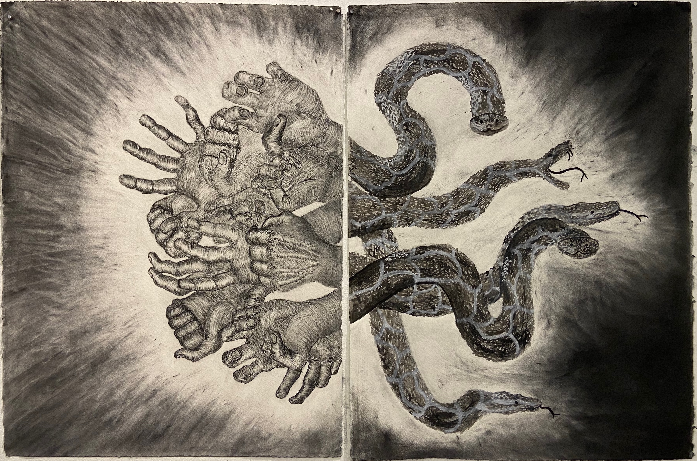
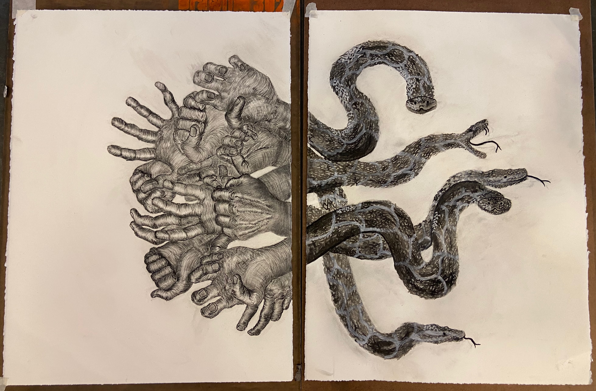
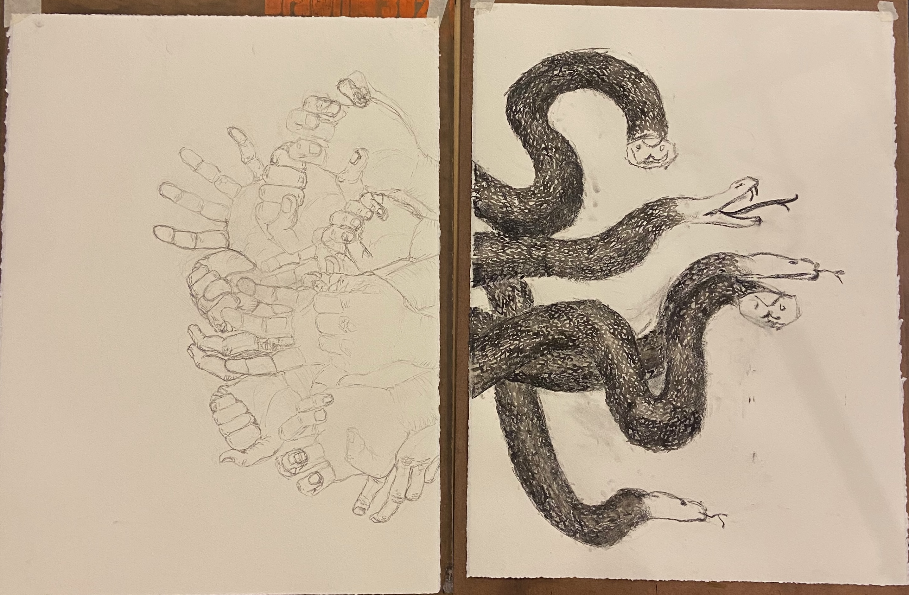
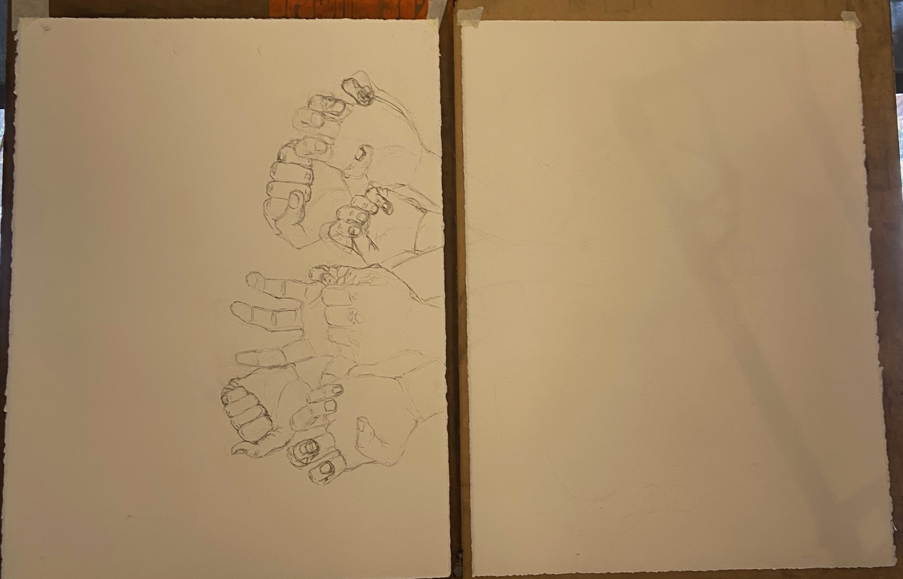

Large-form charcoal diptych from the fall semester of my junior year of college, which was my Drawing I final project. All of it is done with charcoal, and the snakes are also made with gouache to depict their dynamic motion and change in texture.
These hands and snakes pull in opposite directions, depicting the battle I experience living with Misophonia. The snakes represent the internal thoughts, while the hands are the outward-facing reality of what that stress can look like.



